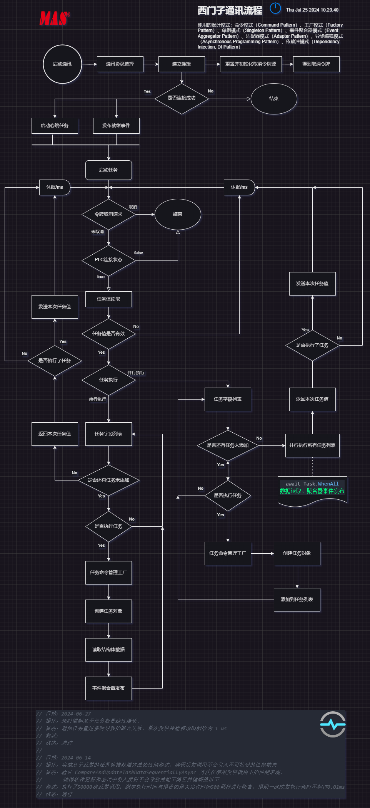

西门子通讯执行流程

测试信息
- 通讯反射性能测试，每
100次执行耗时任务取其中平均值 - 不执行数据读取任务，仅反射 + 决策测试

测试平台
- 处理器：11th Gen Intel(R) Core(TM) i5-1135G7 @ 2.40GHz (2.42 GHz)
- 内存：16.0 GB (15.7 GB 可用)
- 系统类型：64 位操作系统，基于 x64 的处理器
- 操作系统：
- 名称：Windows 11 家庭中文版
- 版本号：23H2
- 安装日期：2023年7月14日
- 操作系统构建版本：22631.3880
- 体验包：Windows Feature Experience Pack 1000.22700.1020.0
其他信息
单次反射性能瓶颈限制不超过 1 us

ECharts
option = {
title: {
text: '反射性能测试结果',
subtext: '仅反射 + 决策，不执行读取任务',
left: 'center'
},
legend: {
data: ['Task Count: 1', 'Task Count: 10'],
left: 'right'
},
xAxis: {
type: 'category',
name: 'Task Count',
data: [1, 1000, 2000, 3000, 4000, 5000, 6000, 7000, 8000, 9000, 10000]
},
yAxis: {
type: 'value',
name: 'ms'
},
series: [
{
name: 'Task Count: 1',
data: [
0.0010109999999999974,
0.46797000000000005,
0.7852510000000003,
1.323048,
1.6766819999999998,
1.9396650000000002,
2.0156569999999996,
2.61425,
2.893754,
3.247703000000001,
3.8252100000000007],
type: 'line',
smooth: true
},
{
name: 'Task Count: 10',
data: [
0.005737000000000009,
2.265415,
4.899089999999998,
6.240781999999999,
8.807637999999997,
10.332812999999996,
11.400258000000006,
13.489982000000008,
14.991412,
17.927968,
19.38777099999999],
type: 'line',
smooth: true,
},
]
};